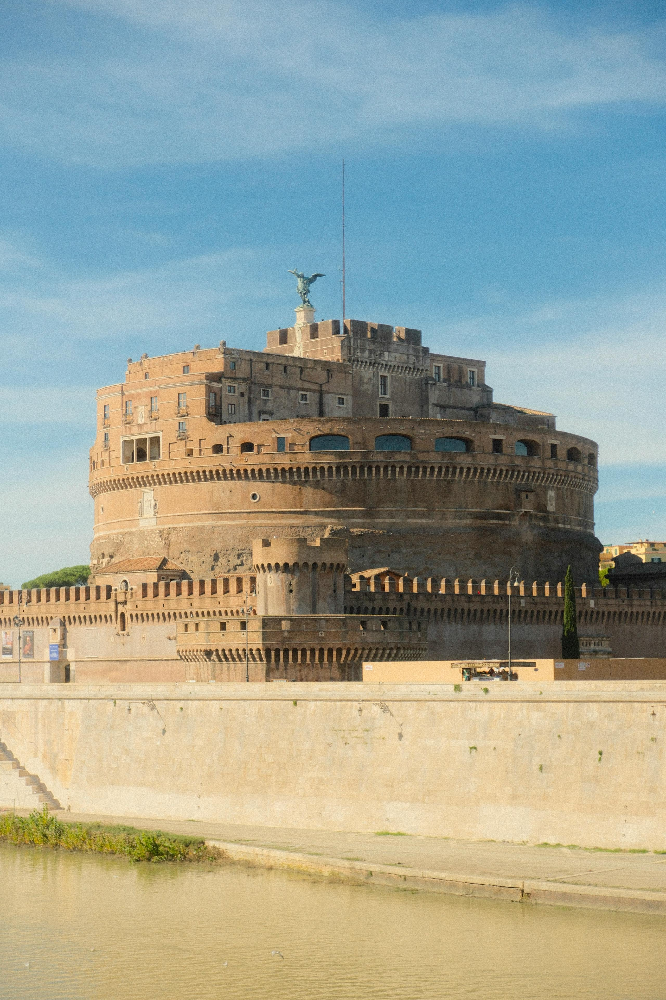

Favorite Travel Destinations
Top 5 Travel Destinations
Destination Name
Country
Best Time to Visit
Rome
Italy
April to October
Paris
France
June to August
Kyoto
Japan
March to May, October to November
Bali
Indonesia
April to October
Sydney
Australia
September to November, March to May
Top Attractions and Activities
Rome, Italy

Visit the Colosseum and Roman Forum
Tour the Vatican Museums and St. Peter's Basilica
Explore the Pantheon and Piazza Navona
Paris, France
See the Eiffel Tower and Louvre Museum
Stroll down the Champs-Élysées
Take a boat tour on the Seine River
Kyoto, Japan
Walk through the Arashiyama Bamboo Grove
Visit the Fushimi Inari Shrine
See the Golden Pavilion (Kinkaku-ji)
Bali, Indonesia
Relax on the beaches of Kuta and Seminyak
Visit the Uluwatu Temple
Explore the rice terraces in Ubud
Sydney, Australia
Climb the Sydney Harbour Bridge
Visit the Sydney Opera House
Relax at Bondi Beach